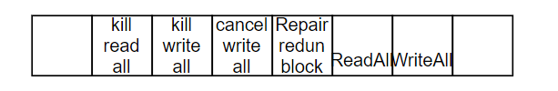

NVM
NVM存储¶
The configuration ID¶
block 1 NvMConfigBlock是一个特殊的NV块，其保存了一个常量NvM_CompiledConfigId_t，该常量和配置项/MICROSAR/NvM/NvMCommon/NvMCompiledConfigId对应。当ReadAll时，该Block的值和常量值进行比较，当两个值匹配时，所有的NV block可认为是有效的，NVM尝试从NV中读取数据。如果值不匹配或者没有读取到有效的configuration ID，则NVM的系统行为如下：
- 当配置项
/MICROSAR/NvM/NvMCommon/NvMDynamicConfiguration为off时，不匹配将被忽略，NVM将从NV中尝试读取数据。(normal runtime preparation)。 - 当配置项为
on时，所有配置了/MICROSAR/NvM/NvMBlockDescriptor/NvMResistantToChangedSw的block，将视为normal runtime preparation，将从NV中尝试读取数据。其他未配置的block将视为extended runtime preparation。不会从NV中读取数据。 - 所有视为
extended runtime preparation的block，将被认为是无效的或空的block。因此，配置为write once的block将被重写。如果配置了rom block或初始化回调函数，则会进行值的初始化。
Block状态查询¶
NvM_QryBlockRelevantForWriteAll¶
block在满足以下条件后，writeall 阶段可写入NV Block。
- block勾选了
Write all- 使能
NVM_SET_RAM_BLOCK_STATUS_API时，当block状态为NVM_STATE_CHANGED_SET和NVM_STATE_VALID_SET时，需要写入，否则无需写入。 - 未使能
NVM_SET_RAM_BLOCK_STATUS_API时，需要写入。
- 使能
- 未勾选
Write all，无需写入。
NvM_ApiFlags¶

read all 和 write all顺序¶
- Write all从block id最大值的到0
- Read all 从0到 id最大值
CRC机制¶
配置参数¶
NvMCalcRamBlockCrc¶
全局ram block的CRC是否需要计算或重新计算。在Read all阶段，NVM内部存储读到的CRC值，并进行数据校验和比较。
NvMBlockUseCrc¶
block是否使用CRC。
NvMBlockUseCRCCompMechanism¶
block是否使用compare mechanism。
NvMCrcIntBuffer¶
NVM是否内部分配buffer用于CRC校验处理，如果不开启，则每个ram block需要各自提供空间存储CRC。当开启内部buffer后，用户数据被拷贝至buffer，然后附加上CRC信息，最后一起被送至下层模块处理。
异步CRC校验¶
block对应的CRC校验是在NvM_MainFunction中异步进行的。受CRC保护的block在写数据到NV前，都需要计算CRC值。如果从NV中读取数据，CRC的值需要重新计算并和读取到的CRC值进行比较。如果配置了NvMCalcRamBlockCrc，最近计算到的CRC值将存储在RAM中，便于后续使用。
如果调用了 NvM_SetRamBlockStatus(TRUE)，且为此块启用了NvMCalcRamBlockCrc，则还将启动对RAM块数据的CRC值的重新计算。
NvM 在 NvM_ReadAll 处理期间尝试对所有在其配置中启用了Read during ReadAll和Calc RAM CRC的 NVRAM 块进行尝试：如果块在内部仍标记为 VALID，NVM 将计算当前 RAM 块内容的 CRC 值和存储在其他地方的值进行比较。 如果它们匹配，则不会触及 RAM 内容； 相反，NVM 假装已成功从 NV 读取这些值。
Compare Mechanism¶
如果特定ram block对应的NV data在运行时没有更新，为了避免不必要的NV 写操作，提供了compare mechanism机制。即，在向NV写数据之前，重新计算当前ram数据的CRC值，并和之前读或写数据操作时保存的CRC值进行比较。
- 如果匹配，则无需写操作，并成功结束任务。
- 如果不匹配，则需要向NV中写数据。
CRC Compare Mechanism和 NvMCalcRamBlockCrc 没有依赖关系，这两者各自使用独立的CRC buffer。
- NvMCalcRamBlockCrc: 调用
NvM_SetRamBlockStatus将引起CRC值的重新计算，NVM保存当前ram block数据的CRC值，并在read all时避免真实的从NV 中读取数据。详见异步CRC校验。 - Compare Mechanism: NVM保存上一次成功读取或写入数据对应的CRC值，如果该CRC值与ram block的数据CRC值匹配，则调用
NvM_WriteBlock, NvM_WriteAll时可避免不必要的数据写入。